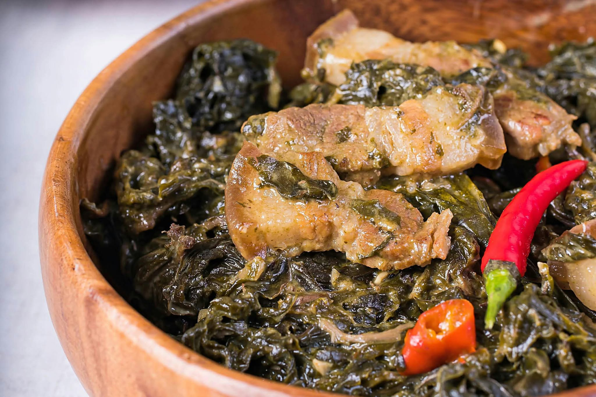

Bicol
Laing
Laing is a traditional Bicolano dish that originated in the Bicol Region of the Philippines. It is made mainly from dried taro leaves (gabi leaves) cooked slowly in coconut milk with chili peppers, garlic, onion, ginger, and shrimp paste or dried fish. It is known for its creamy, rich, and slightly spicy flavor. Unlike many vegetable dishes, authentic Bicolano Laing is usually cooked without stirring the dried leaves too much to prevent them from becoming itchy. It is commonly served with steamed rice and is enjoyed as a side dish or main meal.

Gather
Ingredients
- Dried taro leaves (dahon ng gabi)
- Coconut milk (gata)
- Coconut cream (kakang gata)
- Shrimp paste (bagoong alamang) or dried fish
- Pork, sliced into small pieces (optional)
- Garlic
- Onion
- Ginger
- Long green or red chili peppers (siling haba/siling labuyo)
- Salt and ground black pepper
- Water
Make it
Recipe
- Prepare the dried taro leaves by removing any hard stems and setting them aside. Do not wash the dried leaves if they are already properly dried.
- In a pot, combine the coconut milk, garlic, onion, ginger, shrimp paste or dried fish, and sliced pork if using.
- Bring the mixture to a gentle simmer over medium heat and cook until the pork is tender and the flavors are well combined.
- Add the dried taro leaves gradually. Let them soften naturally in the coconut milk without stirring too much.
- Add the chili peppers and continue cooking over low heat for about 30 to 40 minutes, or until the leaves are completely tender.
- Pour in the coconut cream and continue simmering until the sauce becomes thick, creamy, and rich.
- Season with salt and ground black pepper to taste.